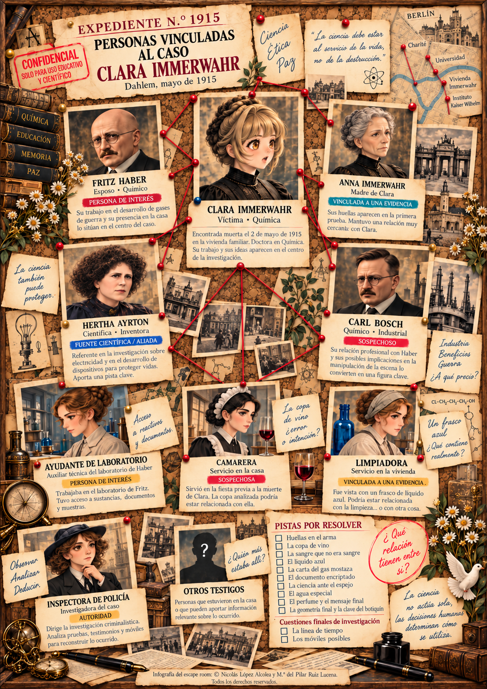

EL MISTERIOSO CASO DE CLARA IMMERWAHR
Preparación del escape room
Guía práctica para el profesorado: organización de la actividad, preparación de las estaciones, ambientación, materiales y recursos digitales.
1. Visión general y planificación
Conoce el origen y la finalidad del proyecto, su planteamiento didáctico y la organización general del escape room a través de dos infografías ilustradas.
2. Montaje de las diez estaciones
Organiza el montaje de las diez estaciones mediante dos recursos complementarios: una visión resumida de la preparación y las fichas técnicas individuales de cada prueba.
Tres guías ilustradas que presentan de forma conjunta la preparación de las pruebas 1 a 3, 4 a 6 y 7 a 10.
Ver las 3 guías de preparación →Diez fichas ilustradas, una por estación, con información específica para preparar cada prueba.
Consultar las 10 fichas técnicas →3. Ambientación y teatralización
Guion teatralizado, personajes y recursos para recrear la investigación.
Guion original para preparar la representación y las intervenciones de los personajes.
Consultar el guion teatralizado →Relación visual de los personajes vinculados al caso.

Pulsa sobre la imagen para ampliarla.
4. Materiales para imprimir
Documentos y pistas que el profesorado debe preparar para desarrollar el escape room.
5. Recursos digitales y temporizador
La investigación está diseñada para 60 minutos de clase, con 10 minutos adicionales de cortesía.
Abrir temporizador · 70 minutos →6. Finalización y evaluación
Instrumentos de evaluación, cierre de la experiencia y reflexión final.
Cuatro rúbricas para valorar la resolución científica, las evidencias y la argumentación, el trabajo cooperativo y la responsabilidad ética. Ocho páginas horizontales.
Consultar las cuatro rúbricas →Hoja de observación, mapa de evaluación por pruebas, autoevaluaciones individual y de equipo, coevaluación y valoración final de la experiencia. Seis páginas verticales.
Consultar los instrumentos de evaluación →